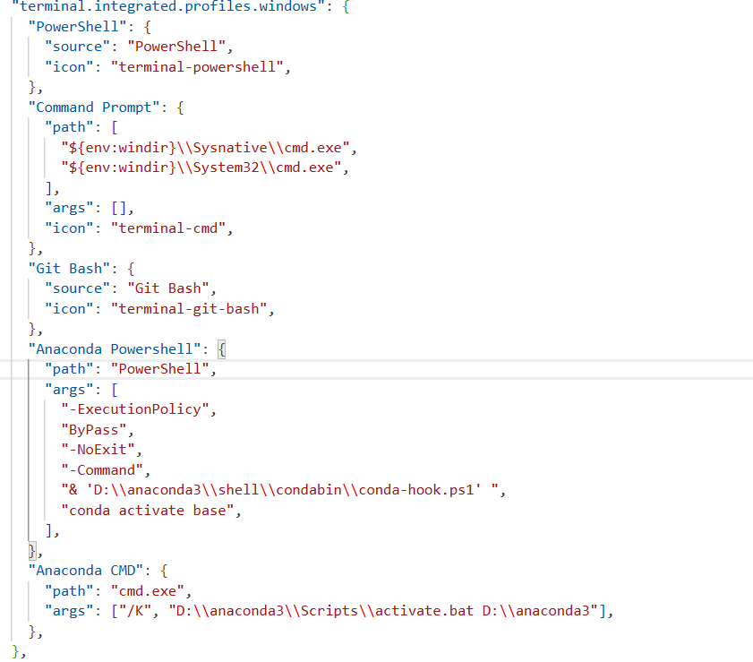

核心栈： Python 3.12 +
PyQt5/PySide6 + (ana)conda (或Miniconda) +
VSCode
AI/CV 项目： PyTorch (CUDA), Open3D, trimesh, Fast3R
等。
⚠️ 易错点：
• 不要使用 Python 3.13+ (很多科学包未适配)
• 避免在 base 环境乱装包，务必创建虚拟环境
• 不要混用 conda 和 pip 安装同一核心包（如 numpy, torch）避免 DLL
冲突
• OpenMP 冲突（常见于 PyTorch + MKL）→ 设置环境变量
KMP_DUPLICATE_LIB_OK=TRUE
虚拟环境是一个隔离的 Python 运行沙箱，每个项目拥有独立的包版本。重要性：
requirements.txt 即可一键复现环境
| 工具 | 定位 | 适用场景 |
|---|---|---|
| pip | Python 官方包管理器（PyPI） | 纯 Python 包，轻量快速 |
| conda | 跨语言包管理器+环境管理 | 管理复杂二进制 (CUDA, OpenCV) + 环境 |
| Anaconda | 发行版 (conda + Python + 150+ 科学包) | 新手，但体积大；追求轻量化可以使用Miniconda |
conda 提示
conda-script.py: error: argument COMMAND: invalid choice: ''
🔸 权宜之计，更健康且可能更有效的工作流见下一点（仅需做一次）
在 系统原生终端（不是 VSCode 内部）执行 conda init。
# win+x 再按a
conda init powershell
conda init pwsh # 如果你使用 PowerShell 7+conda init
source ~/.bashrc # 或重启终端
完成后关闭 VSCode 所有窗口，重新打开 → 新建终端即可正常使用
conda 命令。
🔸
在setting.json中进行配置（之后可能会出团队统一的工作区setting.json）

# 查看所有环境
conda env list
# 创建新环境 ( 指定 Python 版本，例如 3.12,其中-y是传递给命令行的参数，相当于对之后出现的y/n询问做确认 )
conda create -n 环境名称 python=3.12 -y
# 激活环境
conda activate 环境名称
# 退出当前环境
conda deactivate
# 删除环境（加 -y 自动确认）
conda env remove -n 环境名称 -y
# 克隆现有环境（作为备份）
conda create --name 新环境名 --clone 旧环境名conda install -c conda-forge numpy pytorch opencv
requirements.txt，简单可靠。
# 在 conda 环境内
conda activate Omni3D
pip install -r requirements.txt # 安装项目依赖
# 如果上一条报错或出现问题，一般是deepspeed，
# open3d和vtk的问题
# windows系统不怎么适配deepseed，有方法可以但太麻烦，
# deepseed不是win用户必选项，当然你也可以选择linux或者WSL,
# 以下是一般性解决方案：
# 先在requirement.txt用#注释掉deepseed，然后用conda安装复杂包
conda install open3d pyqt5 vtk
# 然后注释掉open3d，因为已通过conda安装，
# 用pip安装requirements.txt
pip install -r requirements.txt
# 如果后续python报错缺少moudle ctype/qt库相关，这条用来解决ctypes依赖
conda install -c conda-forge libffi/pyqt5
pip install torch torchvision torchaudio --index-url https://download.pytorch.org/whl/cu121
pip install -r requirements.txt --dry-run --ignore-installed
conda install --file requirements.txt 不支持
>=、~= 等版本约束符，仅接受包名或
==version。
推荐方案：直接在 conda 环境里用 pip 安装 requirements.txt，这依然是最稳定且最简单的做法。
备选方案：编写 environment.yml 同时管理 conda 和 pip 依赖
name: myenv
channels:
- conda-forge
- defaults
dependencies:
- python=3.12
- pip
- pip:
- -r requirements.txt用下面命令一键创建环境：
conda env create -f environment.ymlconda init：它会将 conda 初始化代码写入 shell 配置文件（.bashrc,
profile.ps1），使每次终端启动时自动激活 conda 函数。
(base) 前缀。
conda init --reverse powershellconda init --reverseOMP: Error #15: Initializing libomp.dll, but found libiomp5md.dll
already initialized.
原因：同时加载了 Intel MKL 的 OpenMP 与 LLVM 的 OpenMP。
✔ 快速解决（推荐）：运行脚本前设置环境变量。
# Windows PowerShell 临时设置
$env:KMP_DUPLICATE_LIB_OK="TRUE"
# macOS / Linux
export KMP_DUPLICATE_LIB_OK=TRUE或在 Python 代码开头加入：
import os
os.environ["KMP_DUPLICATE_LIB_OK"] = "TRUE"# 方法 A：保留 Intel，移除 LLVM
conda remove llvm-openmp -y
conda install intel-openmp -c conda-forge -y
# 方法 B：若冲突依旧，手动重命名 libiomp5md.dll 备份
# 路径： <环境目录>\Library\bin\libiomp5md.dllImportError: DLL load failed while importing _ctypes
原因：缺失 ffi.dll（conda 环境更新导致的残留）。手动从
conda 缓存恢复：
# 找到 libffi 缓存目录
cd D:\anaconda3\pkgs
dir libffi-*
# 复制 ffi.dll 到当前环境 (例：环境名为 Omni3D)
copy libffi-3.4.4-hd77b12b_1\Library\bin\ffi.dll D:\anaconda3\envs\Omni3D\Library\bin\# 1. 安装 Miniconda (https://docs.conda.io/en/latest/miniconda.html)
# 2. 打开 Anaconda PowerShell Prompt 或系统终端
conda create -n team_env python=3.12 -y
conda activate team_env
pip install -r requirements.txt
# 3. 若使用 PyQt5 / Fast3R 等额外包，确保 Python 3.12 版本
pip install pyqt5 open3d trimesh roma